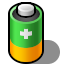
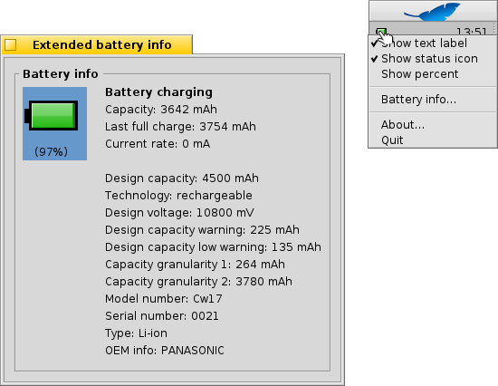

Güç Durumu
| Masaüstü Çubuğu: | ||
| Konum: | /boot/system/apps/PowerStatus | |
| Ayarlar: | ~/config/settings/PowerStatus settings |
Güç Durumu, pil düzeyi hakkında bilgi gösterir; dolayısıyla yalnızca taşınabilir bilgisayarlarda işe yarar. Henüz açık değilse açmak, uygulamacığı pencere kipinde veya Masaüstü Çubuğu'nda tepsiye kurmak isteyip istemediğinizi sorar. Pencere kipinde simgeyi, pencere boyutunu değiştirebilir ve Yinelenen'i kullanarak Masaüstü'ne sürükleyebilirsiniz.
Nereye kurulursa kurulsun, sağ tık bağlam menüsü ile işlenir.
Not: Güç Durumu, çalışır bir ACPI desteğine gereksinim duyar.
Bağlam menüsü aşağıdaki seçenekleri sunar:
| Pil düzeyini yüzde veya kalan zaman olarak gösterir. | ||
| Uygulamacık simgesini gösterir. | ||
| Pil düzeyini yüzde veya kalan zaman olarak gösterme arasında geçiş yap ( etkin olmalıdır). | ||
| Ek pil bilgisi penceresini gösterir. | ||
| Hakkında penceresini gösterir. | ||
| Güç Durumu uygulamacığından çıkar. |
etkinken, dolum sırasında pil düzeyi ayraçlar içinde gösterilir.